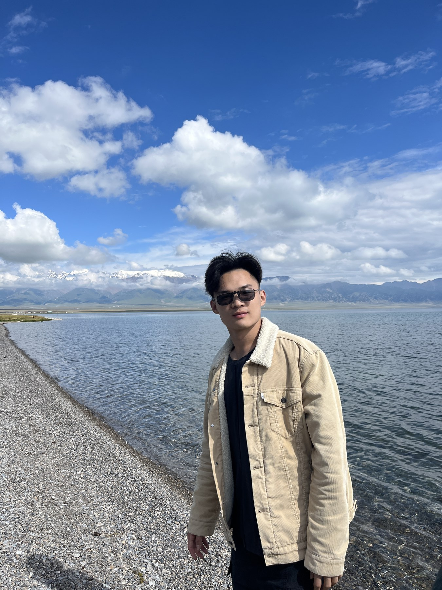

Yuan Zhuang 庄元
I am a PhD student in Computer Science and Engineering at the University of Connecticut, advised by Prof. Fei Miao. I received my M.S. in Data Science from the University of Pennsylvania and my B.Eng. in Ocean Engineering and Technology from Zhejiang University. My research focuses on large language models, mixture of experts, reinforcement learning, and robotics. I am currently seeking full-time opportunities; please feel free to contact me if my background may be a fit for an opening.

Research
Selected Research
Work Experience
Internships
Microsoft
Research Intern
Mixture of Experts, Test-Time Training.
JD.com
Research Intern
Vision Language Action Models (VLA).
Contact